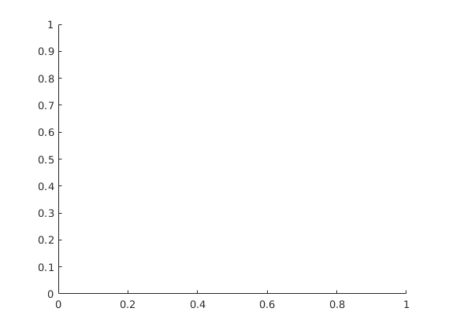
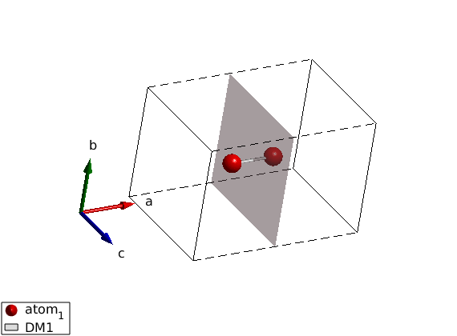
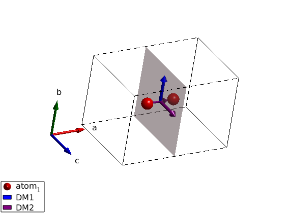
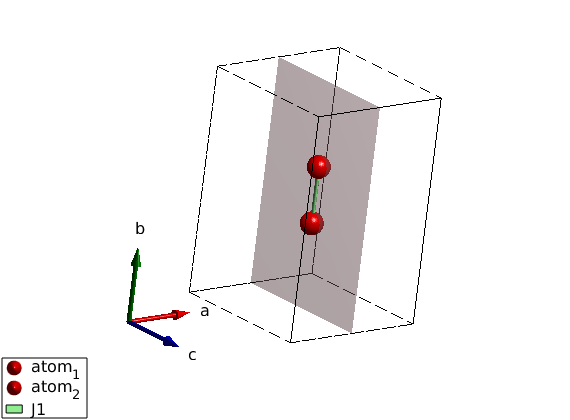
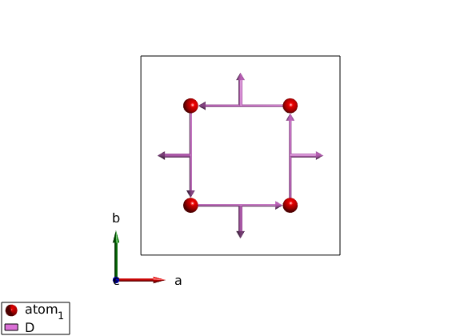
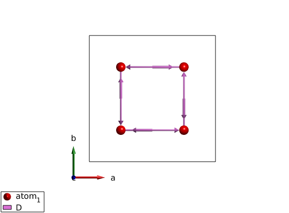
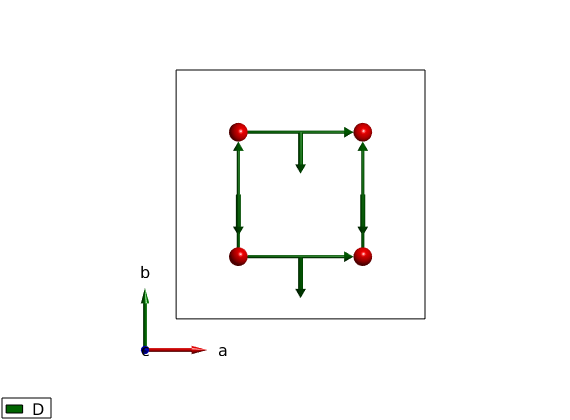
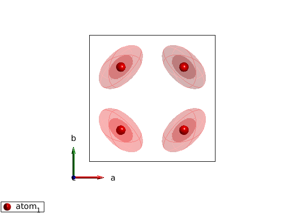
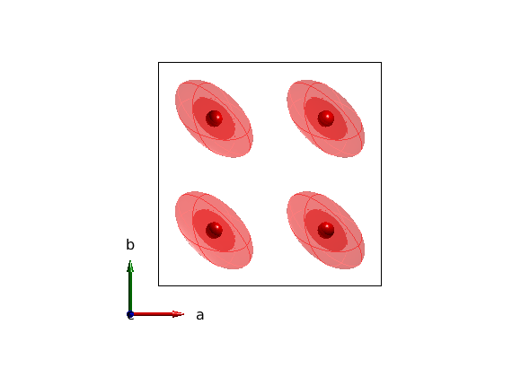

Basic symmetry analysis
We will demonstrate the symmetry analysis capabilities of SpinW in this script. We determine the allowed elements of the Dzyaloshinskii-Moriya vector on a bond that is perpendicular to a mirror plane. The result is well known and can be compared to the SpinW output. We use here explicitly the mirror plane as the only symmetry operator. Also we will draw the plane to demonstrate the new plotting functions of SpinW.
Contents
Define the lattice
model = spinw; model.genlattice('lat_const',[6 4 4],'sym','-x,y,z','label','m_x') model.addatom('r',[3/8 1/2 1/2],'S',1) plot(model) % draw mirror plane Rlu = permute([1/2 0 0;1/2 1 0;1/2 1 1;1/2 0 1],[2 3 1]); swplot.plot('type','polyhedron','position',cat(3,Rlu),'color','pink','alpha',0.5) model.gencoupling model.addmatrix('label','DM1','value',1); model.addcoupling('mat','DM1','bond',1) plot(model) model.getmatrix('mat','DM1'); % Look at the figure from a special angle using the swplot.transform % function and recenter the figure using swplot.translate. R = sw_rotmatd([1 1 0],45); swplot.transform(R) swplot.translate 
Draw the 2 allowed DM components
We add two DM vector that spance the allowed plane.
model.addmatrix('label','DM1','value',[0 1 0],'color','blue') model.addmatrix('label','DM2','value',[0 0 1],'color','purple') model.addcoupling('mat','DM1','bond',1) model.addcoupling('mat','DM2','bond',1) plot(model,'bondScale',1)
Warning: Same matrix already assigned on some coupling, duplicate assigments are removed!
Mirror plane including the bond
The second example show the case when the mirror plane includes the bond.
model = spinw; model.genlattice('lat_const',[4 6 4],'sym','-x,y,z','label','m_x') model.addatom('r',[1/2 3/8 1/2],'S',1) model.addatom('r',[1/2 5/8 1/2],'S',1) plot(model) % Lets draw mirror plane. Rlu = permute([1/2 0 0;1/2 1 0;1/2 1 1;1/2 0 1],[2 3 1]); swplot.plot('type','polyhedron','position',cat(3,Rlu),'color','pink',... 'alpha',0.5,'replace',true) model.quickham(1) plot(model) model.getmatrix('mat','J1'); R = sw_rotmatd([0.5 1 0],45); swplot.transform(R) swplot.translate
DM interaction using P4 space group
SpinW not only determines the symmetry allowed matrix elements of the Hamiltonian, but it also transforms the exchange (anisotropy and g) matrices using the symmetry operators. This example shows this.
cryst=spinw; cryst.genlattice('sym','P 4','lat_const',[8 8 6]) cryst.addatom('r',[1/4 1/4 0],'S',1); cryst.gencoupling; cryst.addmatrix('label','D','value',[0 -1 0]) cryst.addcoupling('mat','D','bond',2) swplot.clear plot(cryst,'range',[1 1 1/2]) swplot.view('c')
How to assign matrix to a different symmetry inequivalent bond
Each bond in SpinW are identified by two indices. The bond index (idx) determines a group of bonds (idx=1 for first neighbor, idx=2 for second neighbor, etc). So we use another index (subidx) to find a given bond within a set of bonds identified by idx. When we assign an interaction to a given list of bonds (given by idx), the exchange matrix will be assigned to the first bond on that list (subidx=1). The other equivalent bonds (subidx>1) will get a generated interaction matrix using the space group operators of the system. At present, there is no freedom to choose the order of the bonds for a given idx. However we can assign a given interaction matrix to any bond, we just have to apply the inverse symmetry operator of the selected bond. Here we will assign the previously defined D-vector to the third bond of the second neighbors (idx=2, subidx=3). For this we use the spinw.symop method to generate the bond symmetry operators, find the right symmetry operator and apply the inverse of it on the interaction matrix. Then store the modified interaction matrix in the spinw object. To find the (idx,subidx) values of a certain bond, you can use the tooltip on the 3D plot by clicking on a bond or use the spin.table('bond') method to get a list of bonds with idx and subidx numbers.
op = cryst.symop;
idx = 2;
subidx = 3;
bIdx = find(cryst.coupling.idx==idx);
bIdx = bIdx(subidx);
R = op.bond(:,:,bIdx);
DM = cryst.matrix.mat;
DMp = inv(R)*DM*inv(R)';
cryst.matrix.mat = DMp;
plot(cryst,'range',[1 1 1/2])
 DM interaction using no space group
By removing the space group (setting symmetry to P0), the model Hamiltonian will look very different.
cryst=spinw; cryst.genlattice('lat_const',[8 8 6]) cryst.addatom('r',[1/4 1/4 0],'S',1); cryst.addatom('r',[3/4 1/4 0],'S',1); cryst.addatom('r',[1/4 3/4 0],'S',1); cryst.addatom('r',[3/4 3/4 0],'S',1); cryst.gencoupling cryst.addmatrix('label','D','value',[0 -1 0]) cryst.addcoupling('mat','D','bond',1,'subIdx',[3 5 7:8]) plot(cryst,'range',[1 1 1/2],'atomLegend',false)
Single ion anisotropy using P4 space group
The symmetry operations will be applied to the single ion anisotropy as well.
cryst=spinw; cryst.genlattice('sym','P 4','lat_const',[8 8 6]) cryst.addatom('r',[1/4 1/4 0],'S',1) cryst.gencoupling cryst.addmatrix('label','A','value',1-eye(3)) cryst.addaniso('A') plot(cryst)
Single ion anisotropy using no space group
Again if the model has no symmetr, the resulting Hamiltonian will be very different.
cryst=spinw; cryst.genlattice('lat_const',[8 8 6]) cryst.addatom('r',[1/4 1/4 0],'S',1) cryst.addatom('r',[3/4 1/4 0],'S',1) cryst.addatom('r',[1/4 3/4 0],'S',1) cryst.addatom('r',[3/4 3/4 0],'S',1) cryst.gencoupling cryst.addmatrix('label','A','value',1-eye(3)) cryst.addaniso('A') plot(cryst,'atomLegend',false)